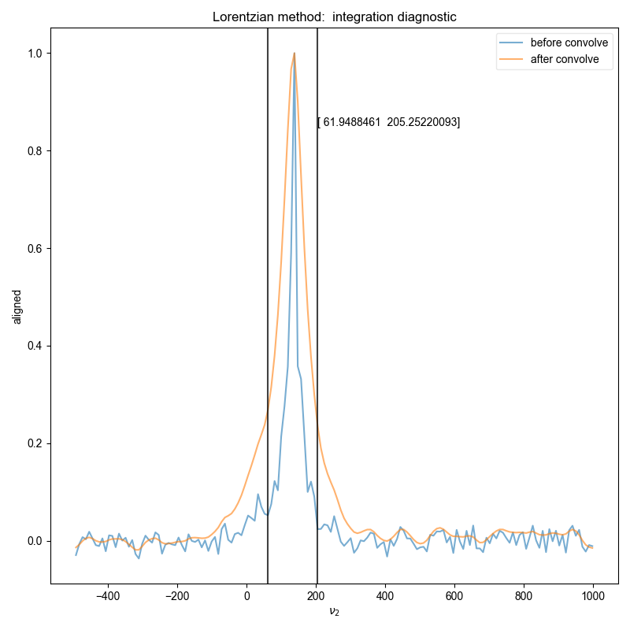
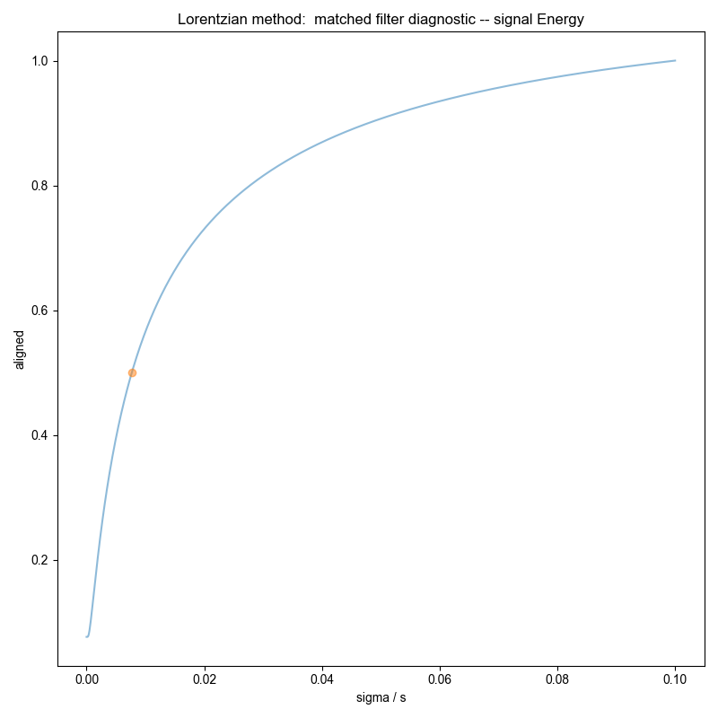
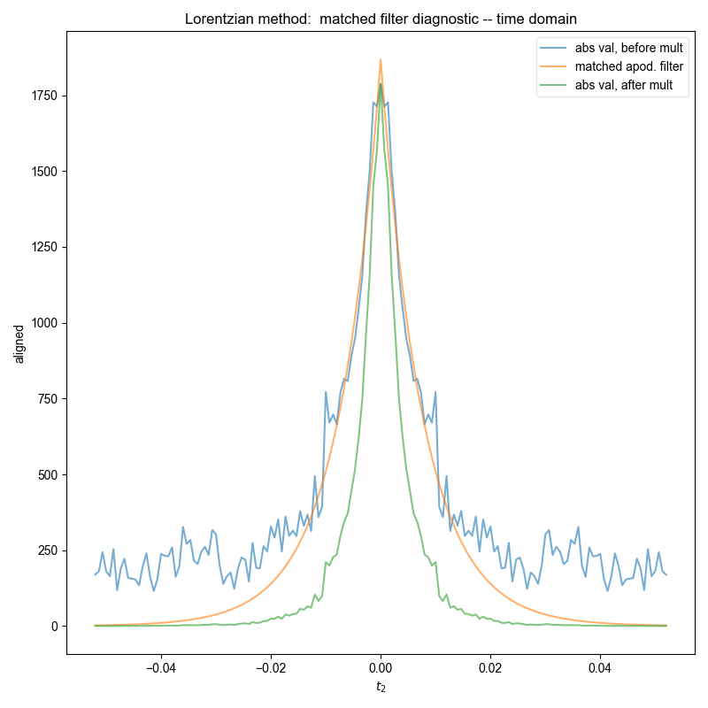
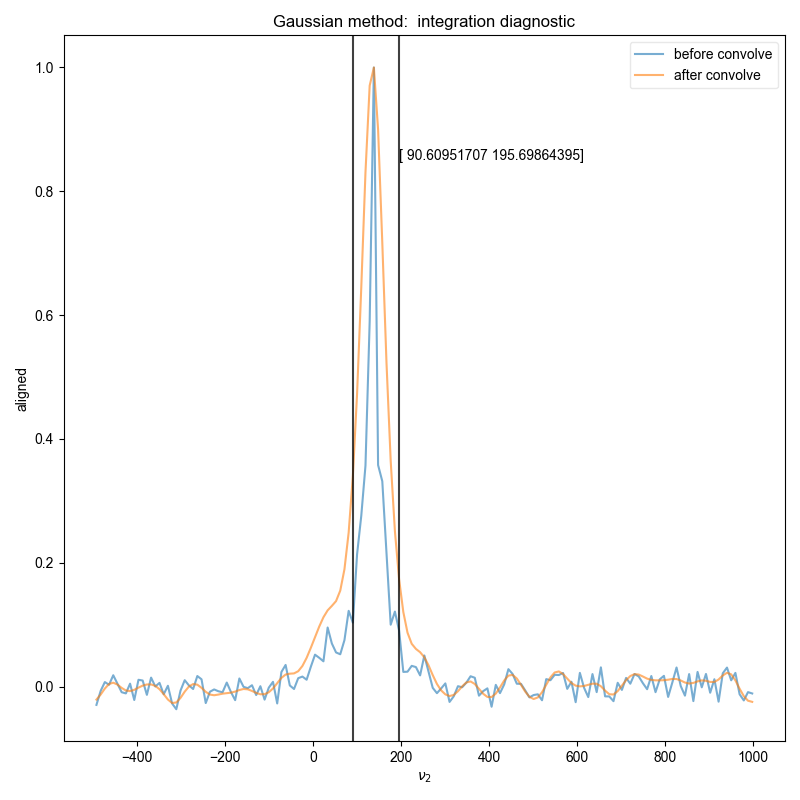
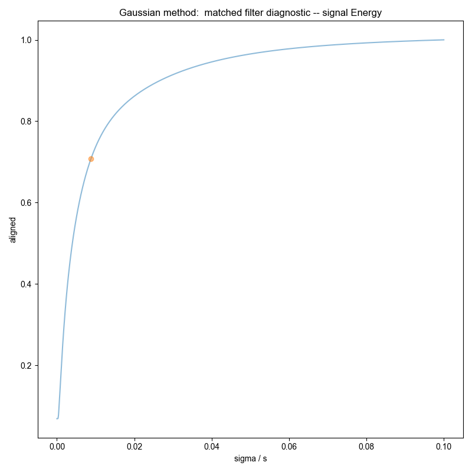
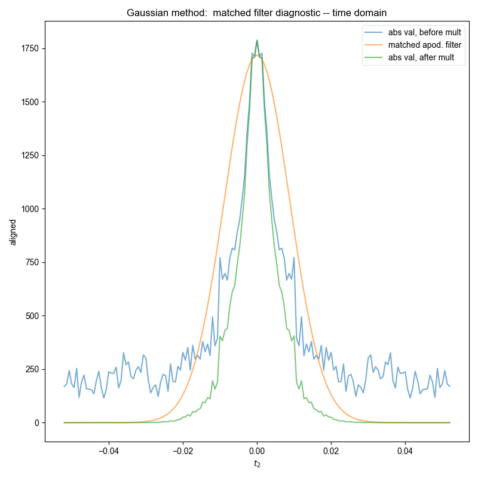

Note
Go to the end to download the full example code
Demonstrate Integrate Limits on Experimental Data¶
Here we load in low SNR Hahn echo data and demonstrate that we can find reasonable and accurate integration limits on this data.
Similar to the demonstration on fake data, we use integrate_limits to detect the frequency limits used for peak integration, and demonstrate, separately, the integration limits using a matched Lorentzian filter and a matched Gaussian filter on our frequency domain data.
We illustrate the position of the frequency limits with vertical lines on the final plots.
- 
- 
- 
- 
- 
- 
You didn't set units for t2 before saving the data!!!
phasing dimension as one
from pylab import *
from pyspecdata import *
from pyspecProcScripts import *
fl = figlist_var()
rcParams["image.aspect"] = "auto"
# sphinx_gallery_thumbnail_number = 1
for (
filename,
expno,
subplot_name,
) in [
# ('210604_50mM_4AT_AOT_w11_cap_probe_echo_tau_1000_before_noApod_ex','prealignment','tau1000, before'),
# ('210604_50mM_4AT_AOT_w11_cap_probe_echo_tau_1000_after_noApod_ex','aligned','tau1000, after'),
# ('210604_50mM_4AT_AOT_w11_cap_probe_echo_tau_3500_before_noApod_ex','prealignment','tau3500, before'),
# ('210604_50mM_4AT_AOT_w11_cap_probe_echo_tau_3500_after_noApod_ex','aligned','tau3500, after'),
# ('210604_50mM_4AT_AOT_w11_cap_probe_echo_tau_11_before_noApod_ex','prealignment','tau11135, before'),
(
"210604_50mM_4AT_AOT_w11_cap_probe_echo_tau_11_after_noApod_ex",
"aligned",
"tau11135, after",
),
]:
d = find_file(filename, exp_type="ODNP_NMR_comp/processed", expno=expno)
signal_pathway = {"ph1": 1, "ph2": 0}
excluded_pathways = [(0, 0), (0, -1)]
d.ift("t2")
# Zeroth order correction
ph0 = select_pathway(d["t2":0], signal_pathway)
if len(ph0.dimlabels) > 0:
assert len(ph0.dimlabels) == 1, (
repr(ndshape(ph0.dimlabels)) + " has too many dimensions"
)
ph0 = zeroth_order_ph(ph0)
print("phasing dimension as one")
else:
print(
"there is only one dimension left -- standard 1D zeroth order phasing"
)
ph0 = ph0 / abs(ph0)
d /= ph0
fl.basename = expno
d.ft("t2")
for method in ["Lorentzian", "Gaussian"]:
fl.basename = "%s method: " % method
freq_lim = integrate_limits(
select_pathway(d, signal_pathway), convolve_method=method, fl=fl
)
fl.show()
Total running time of the script: (0 minutes 1.584 seconds)